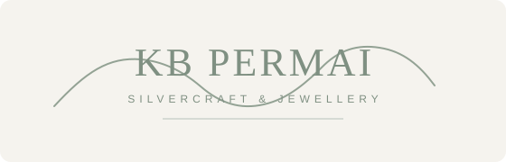
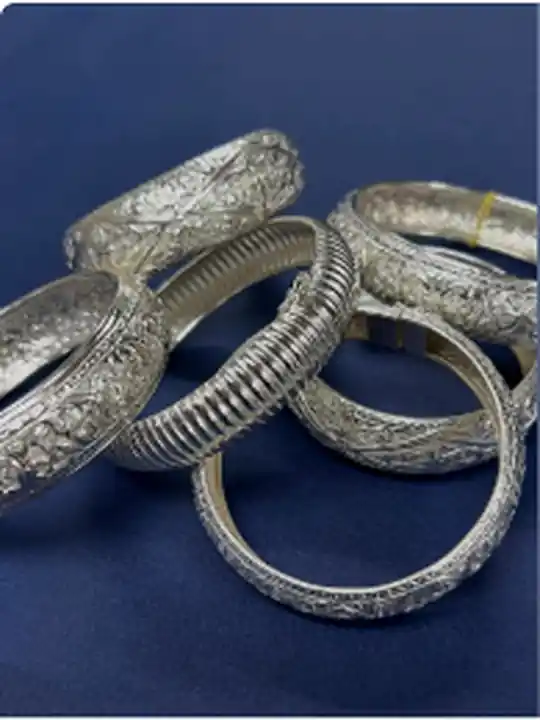
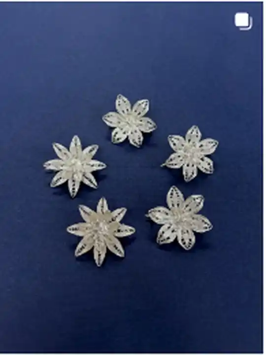
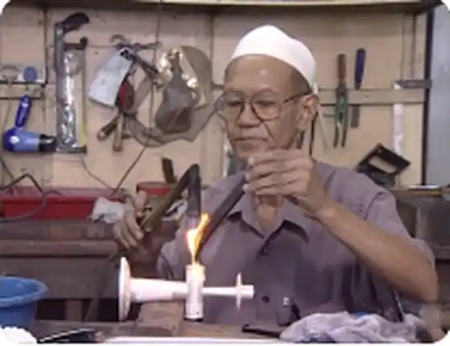
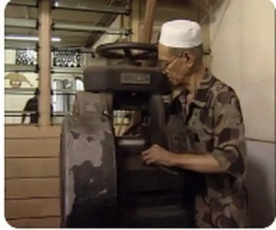

Reka
Pilih motif, bentuk dan kegunaan. Tempahan khas bermula daripada idea pelanggan.

WhatsAppKB PERMAI · KOTA BHARU, KELANTAN
Seni pertukangan perak Kelantan, dibawa ke gaya hari ini. Temui koleksi perak 925, ukiran halus dan tempahan yang dibuat mengikut citarasa anda.


KOLEKSI PILIHAN
Kami tidak letakkan harga rekaan dalam demo ini. Harga sebenar boleh berubah mengikut berat, reka bentuk dan kerja ukiran. Klik mana-mana koleksi untuk terus bertanya melalui WhatsApp.


WARISAN KB PERMAI
KB Permai diasaskan pada 1985 oleh Allahyarham Tuan Haji Ab. Manan bin Haji Yakub, lebih dikenali sebagai Pok Teh. Kemahiran beliau berakar daripada tradisi pertukangan perak keluarga dan berkembang menjadi perusahaan yang dikenali kerana ukiran halus, motif tradisional dan kerja khas.
Warisan itu diteruskan oleh generasi keluarga hari ini, sambil membawa seni perak Kelantan kepada pelanggan moden.
SENI DI SEBALIK PERAK
Motif flora, awan larat dan corak geometri telah lama menjadi sebahagian daripada bahasa visual pertukangan perak Kelantan.
Pilih motif, bentuk dan kegunaan. Tempahan khas bermula daripada idea pelanggan.
Perak disediakan dan dibentuk mengikut saiz serta struktur yang diperlukan.
Corak dan butiran dihasilkan menggunakan kemahiran tangan serta teknik tradisional.
Setiap karya diperiksa, dikemas dan digilap sebelum diserahkan kepada pelanggan.
TEMPAHAN KHAS
Nama, hadiah perkahwinan, cenderamata korporat, barangan istiadat atau reka bentuk yang lebih personal. Hantar gambar rujukan atau lakaran melalui WhatsApp untuk semakan.
Hantar idea di WhatsAppLEBIH DARIPADA JEWELLERY
Gelang, cincin, anting, rantai dan aksesori dengan pilihan motif tradisional atau kontemporari.
Tempahan nama, hadiah, aksesori khas, cenderamata dan barangan perak mengikut reka bentuk pelanggan.
Pemeriksaan dan pembaikan untuk barangan perak terpilih. Hantar gambar dahulu untuk penilaian.
Kerja pemulihan barangan perak dan kraf terpilih, termasuk item berskala lebih besar bergantung keadaan.
KUNJUNGI KB PERMAI
5406-B & C, Jalan Sultanah Zainab,
15050 Kota Bharu, Kelantan
KOTA BHARU
KELANTAN